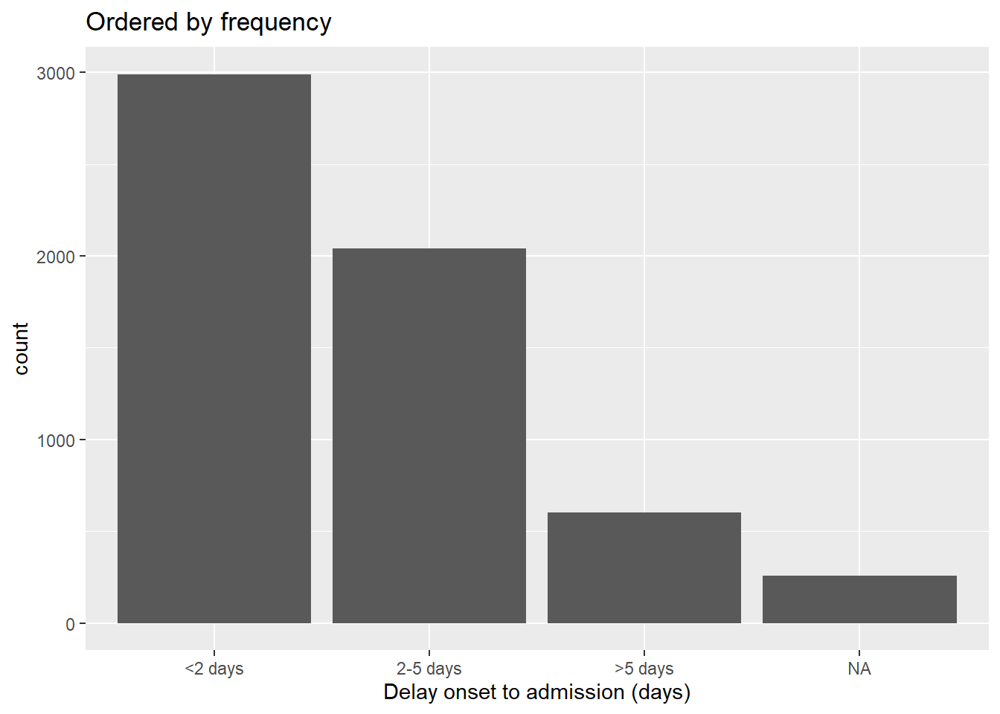
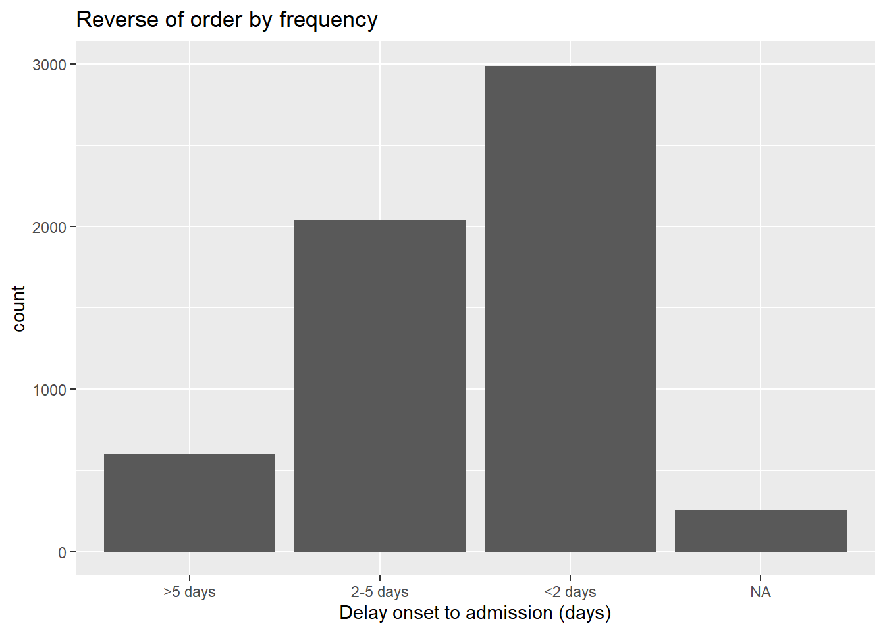

11 Factors

In R, factors are a class of data that allow for ordered categories with a fixed set of acceptable values.
Typically, you would convert a column from character or numeric class to a factor if you want to set an intrinsic order to the values (“levels”) so they can be displayed non-alphabetically in plots and tables. Another common use of factors is to standardise the legends of plots so they do not fluctuate if certain values are temporarily absent from the data.
This page demonstrates use of functions from the package forcats (a short name for “For categorical variables”) and some base R functions. We also touch upon the use of lubridate and aweek for special factor cases related to epidemiological weeks.
A complete list of forcats functions can be found online here. Below we demonstrate some of the most common ones.
11.1 Preparation
Load packages
This code chunk shows the loading of packages required for the analyses. In this handbook we emphasize p_load() from pacman, which installs the package if necessary and loads it for use. You can also load installed packages with library() from base R. See the page on R basics for more information on R packages.
pacman::p_load(
rio, # import/export
here, # filepaths
lubridate, # working with dates
forcats, # factors
aweek, # create epiweeks with automatic factor levels
janitor, # tables
tidyverse # data mgmt and viz
)Import data
We import the dataset of cases from a simulated Ebola epidemic. If you want to follow along, click to download the “clean” linelist (as .rds file). Import your data with the import() function from the rio package (it accepts many file types like .xlsx, .rds, .csv - see the Import and export page for details).
# import your dataset
linelist <- import("linelist_cleaned.rds")New categorical variable
For demonstration in this page we will use a common scenario - the creation of a new categorical variable.
Note that if you convert a numeric column to class factor, you will not be able to calculate numeric statistics on it.
Create column
We use the existing column days_onset_hosp (days from symptom onset to hospital admission) and create a new column delay_cat by classifying each row into one of several categories. We do this with the dplyr function case_when(), which sequentially applies logical criteria (right-side) to each row and returns the corresponding left-side value for the new column delay_cat. Read more about case_when() in Cleaning data and core functions.
Default value order
As created with case_when(), the new column delay_cat is a categorical column of class Character - not yet a factor. Thus, in a frequency table, we see that the unique values appear in a default alpha-numeric order - an order that does not make much intuitive sense:
table(linelist$delay_cat, useNA = "always")##
## <2 days >5 days 2-5 days <NA>
## 2990 602 2040 256Likewise, if we make a bar plot, the values also appear in this order on the x-axis (see the ggplot basics page for more on ggplot2 - the most common visualization package in R).

11.2 Convert to factor
To convert a character or numeric column to class factor, you can use any function from the forcats package (many are detailed below). They will convert to class factor and then also perform or allow certain ordering of the levels - for example using fct_relevel() lets you manually specify the level order. The function as_factor() simply converts the class without any further capabilities.
The base R function factor() converts a column to factor and allows you to manually specify the order of the levels, as a character vector to its levels = argument.
Below we use mutate() and fct_relevel() to convert the column delay_cat from class character to class factor. The column delay_cat is created in the Preparation section above.
linelist <- linelist %>%
mutate(delay_cat = fct_relevel(delay_cat))The unique “values” in this column are now considered “levels” of the factor. The levels have an order, which can be printed with the base R function levels(), or alternatively viewed in a count table via table() from base R or tabyl() from janitor. By default, the order of the levels will be alpha-numeric, as before. Note that NA is not a factor level.
levels(linelist$delay_cat)## [1] "<2 days" ">5 days" "2-5 days"The function fct_relevel() has the additional utility of allowing you to manually specify the level order. Simply write the level values in order, in quotation marks, separated by commas, as shown below. Note that the spelling must exactly match the values. If you want to create levels that do not exist in the data, use fct_expand() instead).
linelist <- linelist %>%
mutate(delay_cat = fct_relevel(delay_cat, "<2 days", "2-5 days", ">5 days"))We can now see that the levels are ordered, as specified in the previous command, in a sensible order.
levels(linelist$delay_cat)## [1] "<2 days" "2-5 days" ">5 days"Now the plot order makes more intuitive sense as well.
11.3 Add or drop levels
Add
If you need to add levels to a factor, you can do this with fct_expand(). Just write the column name followed by the new levels (separated by commas). By tabulating the values, we can see the new levels and the zero counts. You can use table() from base R, or tabyl() from janitor:
linelist %>%
mutate(delay_cat = fct_expand(delay_cat, "Not admitted to hospital", "Transfer to other jurisdiction")) %>%
tabyl(delay_cat) # print table## delay_cat n percent valid_percent
## <2 days 2990 0.50781250 0.5308949
## 2-5 days 2040 0.34646739 0.3622159
## >5 days 602 0.10224185 0.1068892
## Not admitted to hospital 0 0.00000000 0.0000000
## Transfer to other jurisdiction 0 0.00000000 0.0000000
## <NA> 256 0.04347826 NANote: there is a special forcats function to easily add missing values (NA) as a level. See the section on Missing values below.
Drop
If you use fct_drop(), the “unused” levels with zero counts will be dropped from the set of levels. The levels we added above (“Not admitted to a hospital”) exists as a level but no rows actually have those values. So they will be dropped by applying fct_drop() to our factor column:
## delay_cat n percent valid_percent
## <2 days 2990 0.50781250 0.5308949
## 2-5 days 2040 0.34646739 0.3622159
## >5 days 602 0.10224185 0.1068892
## <NA> 256 0.04347826 NA11.4 Adjust level order
The package forcats offers useful functions to easily adjust the order of a factor’s levels (after a column been defined as class factor):
These functions can be applied to a factor column in two contexts:
- To the column in the data frame, as usual, so the transformation is available for any subsequent use of the data
- Inside of a plot, so that the change is applied only within the plot
Manually
This function is used to manually order the factor levels. If used on a non-factor column, the column will first be converted to class factor.
Within the parentheses first provide the factor column name, then provide either:
- All the levels in the desired order (as a character vector
c()), or
- One level and it’s corrected placement using the
after =argument
Here is an example of redefining the column delay_cat (which is already class Factor) and specifying all the desired order of levels.
# re-define level order
linelist <- linelist %>%
mutate(delay_cat = fct_relevel(delay_cat, c("<2 days", "2-5 days", ">5 days")))If you only want to move one level, you can specify it to fct_relevel() alone and give a number to the after = argument to indicate where in the order it should be. For example, the command below shifts “<2 days” to the second position:
# re-define level order
linelist %>%
mutate(delay_cat = fct_relevel(delay_cat, "<2 days", after = 1)) %>%
tabyl(delay_cat)Within a plot
The forcats commands can be used to set the level order in the data frame, or only within a plot. By using the command to “wrap around” the column name within the ggplot() plotting command, you can reverse/relevel/etc. the transformation will only apply within that plot.
Below, two plots are created with ggplot() (see the ggplot basics page). In the first, the delay_cat column is mapped to the x-axis of the plot, with it’s default level order as in the data linelist. In the second example it is wrapped within fct_relevel() and the order is changed in the plot.
# Alpha-numeric default order - no adjustment within ggplot
ggplot(data = linelist)+
geom_bar(mapping = aes(x = delay_cat))
# Factor level order adjusted within ggplot
ggplot(data = linelist)+
geom_bar(mapping = aes(x = fct_relevel(delay_cat, c("<2 days", "2-5 days", ">5 days"))))

Note that default x-axis title is now quite complicated - you can overwrite this title with the ggplot2 labs() argument.
Reverse
It is rather common that you want to reverse the level order. Simply wrap the factor with fct_rev().
Note that if you want to reverse only a plot legend but not the actual factor levels, you can do that with guides() (see ggplot tips).
By frequency
To order by frequency that the value appears in the data, use fct_infreq(). Any missing values (NA) will automatically be included at the end, unless they are converted to an explicit level (see this section). You can reverse the order by further wrapping with fct_rev().
This function can be used within a ggplot(), as shown below.
# ordered by frequency
ggplot(data = linelist, aes(x = fct_infreq(delay_cat)))+
geom_bar()+
labs(x = "Delay onset to admission (days)",
title = "Ordered by frequency")
# reversed frequency
ggplot(data = linelist, aes(x = fct_rev(fct_infreq(delay_cat))))+
geom_bar()+
labs(x = "Delay onset to admission (days)",
title = "Reverse of order by frequency")
By appearance
Use fct_inorder() to set the level order to match the order of appearance in the data, starting from the first row. This can be useful if you first carefully arrange() the data in the data frame, and then use this to set the factor order.
By summary statistic of another column
You can use fct_reorder() to order the levels of one column by a summary statistic of another column. Visually, this can result in pleasing plots where the bars/points ascend or descend steadily across the plot.
In the examples below, the x-axis is delay_cat, and the y-axis is numeric column ct_blood (cycle-threshold value). Box plots show the CT value distribution by delay_cat group. We want to order the box plots in ascending order by the group median CT value.
In the first example below, the default order alpha-numeric level order is used. You can see the box plot heights are jumbled and not in any particular order. In the second example, the delay_cat column (mapped to the x-axis) has been wrapped in fct_reorder(), the column ct_blood is given as the second argument, and “median” is given as the third argument (you could also use “max”, “mean”, “min”, etc). Thus, the order of the levels of delay_cat will now reflect ascending median CT values of each delay_cat group’s median CT value. This is reflected in the second plot - the box plots have been re-arranged to ascend. Note how NA (missing) will appear at the end, unless converted to an explicit level.
# boxplots ordered by original factor levels
ggplot(data = linelist)+
geom_boxplot(
aes(x = delay_cat,
y = ct_blood,
fill = delay_cat))+
labs(x = "Delay onset to admission (days)",
title = "Ordered by original alpha-numeric levels")+
theme_classic()+
theme(legend.position = "none")
# boxplots ordered by median CT value
ggplot(data = linelist)+
geom_boxplot(
aes(x = fct_reorder(delay_cat, ct_blood, "median"),
y = ct_blood,
fill = delay_cat))+
labs(x = "Delay onset to admission (days)",
title = "Ordered by median CT value in group")+
theme_classic()+
theme(legend.position = "none")

Note in this example above there are no steps required prior to the ggplot() call - the grouping and calculations are all done internally to the ggplot command.
By “end” value
Use fct_reorder2() for grouped line plots. It orders the levels (and therefore the legend) to align with the vertical ordering of the lines at the “end” of the plot. Technically speaking, it “orders by the y-values associated with the largest x values.”
For example, if you have lines showing case counts by hospital over time, you can apply fct_reorder2() to the color = argument within aes(), such that the vertical order of hospitals appearing in the legend aligns with the order of lines at the terminal end of the plot. Read more in the online documentation.
epidemic_data <- linelist %>% # begin with the linelist
filter(date_onset < as.Date("2014-09-21")) %>% # cut-off date, for visual clarity
count( # get case counts per week and by hospital
epiweek = lubridate::floor_date(date_onset, "week"),
hospital
)
ggplot(data = epidemic_data)+ # start plot
geom_line( # make lines
aes(
x = epiweek, # x-axis epiweek
y = n, # height is number of cases per week
color = fct_reorder2(hospital, epiweek, n)))+ # data grouped and colored by hospital, with factor order by height at end of plot
labs(title = "Factor levels (and legend display) by line height at end of plot",
color = "Hospital") # change legend title11.5 Missing values
If you have NA values in your factor column, you can easily convert them to a named level such as “Missing” with fct_explicit_na(). The NA values are converted to “(Missing)” at the end of the level order by default. You can adjust the level name with the argument na_level =.
Below, this opertation is performed on the column delay_cat and a table is printed with tabyl() with NA converted to “Missing delay”.
linelist %>%
mutate(delay_cat = fct_explicit_na(delay_cat, na_level = "Missing delay")) %>%
tabyl(delay_cat)## delay_cat n percent
## 2-5 days 2040 0.34646739
## <2 days 2990 0.50781250
## >5 days 602 0.10224185
## Missing delay 256 0.0434782611.6 Combine levels
Manually
You can adjust the level displays manually manually with fct_recode(). This is like the dplyr function recode() (see Cleaning data and core functions), but it allows the creation of new factor levels. If you use the simple recode() on a factor, new re-coded values will be rejected unless they have already been set as permissible levels.
This tool can also be used to “combine” levels, by assigning multiple levels the same re-coded value. Just be careful to not lose information! Consider doing these combining steps in a new column (not over-writing the existing column).
fct_recode() has a different syntax than recode(). recode() uses OLD = NEW, whereas fct_recode() uses NEW = OLD.
The current levels of delay_cat are:
levels(linelist$delay_cat)## [1] "<2 days" "2-5 days" ">5 days"The new levels are created using syntax fct_recode(column, "new" = "old", "new" = "old", "new" = "old") and printed:
linelist %>%
mutate(delay_cat = fct_recode(
delay_cat,
"Less than 2 days" = "<2 days",
"2 to 5 days" = "2-5 days",
"More than 5 days" = ">5 days")) %>%
tabyl(delay_cat)## delay_cat n percent valid_percent
## Less than 2 days 2990 0.50781250 0.5308949
## 2 to 5 days 2040 0.34646739 0.3622159
## More than 5 days 602 0.10224185 0.1068892
## <NA> 256 0.04347826 NAHere they are manually combined with fct_recode(). Note there is no error raised at the creation of a new level “Less than 5 days”.
linelist %>%
mutate(delay_cat = fct_recode(
delay_cat,
"Less than 5 days" = "<2 days",
"Less than 5 days" = "2-5 days",
"More than 5 days" = ">5 days")) %>%
tabyl(delay_cat)## delay_cat n percent valid_percent
## Less than 5 days 5030 0.85427989 0.8931108
## More than 5 days 602 0.10224185 0.1068892
## <NA> 256 0.04347826 NAReduce into “Other”
You can use fct_other() to manually assign factor levels to an “Other” level. Below, all levels in the column hospital, aside from “Port Hospital” and “Central Hospital”, are combined into “Other”. You can provide a vector to either keep =, or drop =. You can change the display of the “Other” level with other_level =.
linelist %>%
mutate(hospital = fct_other( # adjust levels
hospital,
keep = c("Port Hospital", "Central Hospital"), # keep these separate
other_level = "Other Hospital")) %>% # All others as "Other Hospital"
tabyl(hospital) # print table## hospital n percent
## Central Hospital 454 0.07710598
## Port Hospital 1762 0.29925272
## Other Hospital 3672 0.62364130Reduce by frequency
You can combine the least-frequent factor levels automatically using fct_lump().
To “lump” together many low-frequency levels into an “Other” group, do one of the following:
- Set
n =as the number of groups you want to keep. The n most-frequent levels will be kept, and all others will combine into “Other”.
- Set
prop =as the threshold frequency proportion for levels above which you want to keep. All other values will combine into “Other”.
You can change the display of the “Other” level with other_level =. Below, all but the two most-frequent hospitals are combined into “Other Hospital”.
linelist %>%
mutate(hospital = fct_lump( # adjust levels
hospital,
n = 2, # keep top 2 levels
other_level = "Other Hospital")) %>% # all others as "Other Hospital"
tabyl(hospital) # print table## hospital n percent
## Missing 1469 0.2494905
## Port Hospital 1762 0.2992527
## Other Hospital 2657 0.4512568, warn ## Show all levels
One benefit of using factors is to standardise the appearance of plot legends and tables, regardless of which values are actually present in a dataset.
If you are preparing many figures (e.g. for multiple jurisdictions) you will want the legends and tables to appear identically even with varying levels of data completion or data composition.
In plots
In a ggplot() figure, simply add the argument drop = FALSE in the relevant scale_xxxx() function. All factor levels will be displayed, regardless of whether they are present in the data. If your factor column levels are displayed using fill =, then in scale_fill_discrete() you include drop = FALSE, as shown below. If your levels are displayed with x = (to the x-axis) color = or size = you would provide this to scale_color_discrete() or scale_size_discrete() accordingly.
This example is a stacked bar plot of age category, by hospital. Adding scale_fill_discrete(drop = FALSE) ensures that all age groups appear in the legend, even if not present in the data.
ggplot(data = linelist)+
geom_bar(mapping = aes(x = hospital, fill = age_cat)) +
scale_fill_discrete(drop = FALSE)+ # show all age groups in the legend, even those not present
labs(
title = "All age groups will appear in legend, even if not present in data")
In tables
Both the base R table() and tabyl() from janitor will show all factor levels (even unused levels).
If you use count() or summarise() from dplyr to make a table, add the argument .drop = FALSE to include counts for all factor levels even those unused.
Read more in the Descriptive tables page, or at the scale_discrete documentation, or the count() documentation. You can see another example in the Contact tracing page.
11.7 Epiweeks
Please see the extensive discussion of how to create epidemiological weeks in the Grouping data page.
Please also see the Working with dates page for tips on how to create and format epidemiological weeks.
Epiweeks in a plot
If your goal is to create epiweeks to display in a plot, you can do this simply with lubridate’s floor_date(), as explained in the Grouping data page. The values returned will be of class Date with format YYYY-MM-DD. If you use this column in a plot, the dates will naturally order correctly, and you do not need to worry about levels or converting to class Factor. See the ggplot() histogram of onset dates below.
In this approach, you can adjust the display of the dates on an axis with scale_x_date(). See the page on Epidemic curves for more information. You can specify a “strptime” display format to the date_labels = argument of scale_x_date(). These formats use “%” placeholders and are covered in the Working with dates page. Use “%Y” to represent a 4-digit year, and either “%W” or “%U” to represent the week number (Monday or Sunday weeks respectively).
linelist %>%
mutate(epiweek_date = floor_date(date_onset, "week")) %>% # create week column
ggplot()+ # begin ggplot
geom_histogram(mapping = aes(x = epiweek_date))+ # histogram of date of onset
scale_x_date(date_labels = "%Y-W%W") # adjust disply of dates to be YYYY-WWw
Epiweeks in the data
However, if your purpose in factoring is not to plot, you can approach this one of two ways:
- For fine control over the display, convert the lubridate epiweek column (YYYY-MM-DD) to the desired display format (YYYY-WWw) within the data frame itself, and then convert it to class Factor.
First, use format() from base R to convert the date display from YYYY-MM-DD to YYYY-Www display (see the Working with dates page). In this process the class will be converted to character. Then, convert from character to class Factor with factor().
linelist <- linelist %>%
mutate(epiweek_date = floor_date(date_onset, "week"), # create epiweeks (YYYY-MM-DD)
epiweek_formatted = format(epiweek_date, "%Y-W%W"), # Convert to display (YYYY-WWw)
epiweek_formatted = factor(epiweek_formatted)) # Convert to factor
# Display levels
levels(linelist$epiweek_formatted)## [1] "2014-W13" "2014-W14" "2014-W15" "2014-W16" "2014-W17" "2014-W18" "2014-W19" "2014-W20" "2014-W21" "2014-W22"
## [11] "2014-W23" "2014-W24" "2014-W25" "2014-W26" "2014-W27" "2014-W28" "2014-W29" "2014-W30" "2014-W31" "2014-W32"
## [21] "2014-W33" "2014-W34" "2014-W35" "2014-W36" "2014-W37" "2014-W38" "2014-W39" "2014-W40" "2014-W41" "2014-W42"
## [31] "2014-W43" "2014-W44" "2014-W45" "2014-W46" "2014-W47" "2014-W48" "2014-W49" "2014-W50" "2014-W51" "2015-W00"
## [41] "2015-W01" "2015-W02" "2015-W03" "2015-W04" "2015-W05" "2015-W06" "2015-W07" "2015-W08" "2015-W09" "2015-W10"
## [51] "2015-W11" "2015-W12" "2015-W13" "2015-W14" "2015-W15" "2015-W16"DANGER: If you place the weeks ahead of the years (“Www-YYYY”) (“%W-%Y”), the default alpha-numeric level ordering will be incorrect (e.g. 01-2015 will be before 35-2014). You could need to manually adjust the order, which would be a long painful process.
-
For fast default display, use the aweek package and it’s function
date2week(). You can set theweek_start =day, and if you setfactor = TRUEthen the output column is an ordered factor. As a bonus, the factor includes levels for all possible weeks in the span - even if there are no cases that week.
df <- linelist %>%
mutate(epiweek = date2week(date_onset, week_start = "Monday", factor = TRUE))
levels(df$epiweek)See the Working with dates page for more information about aweek. It also offers the reverse function week2date().
11.8 Resources
R for Data Science page on factors
aweek package vignette